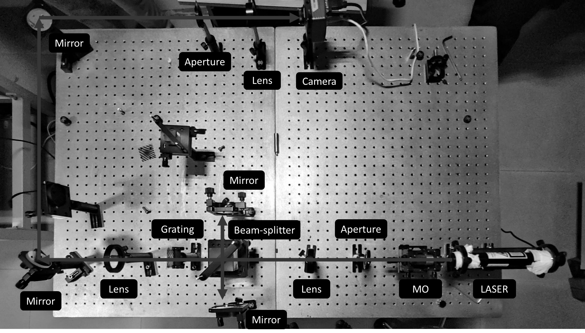
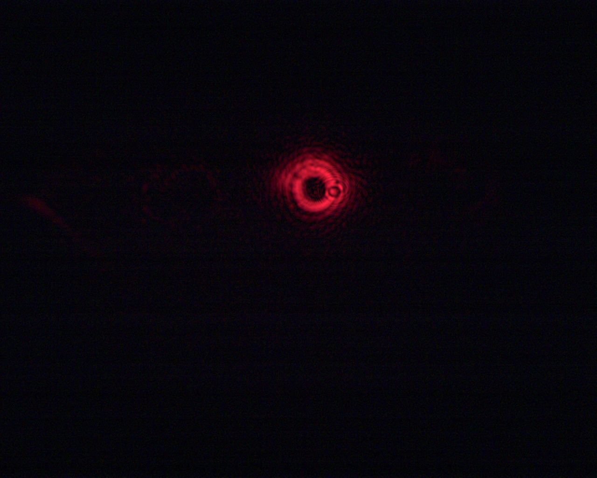
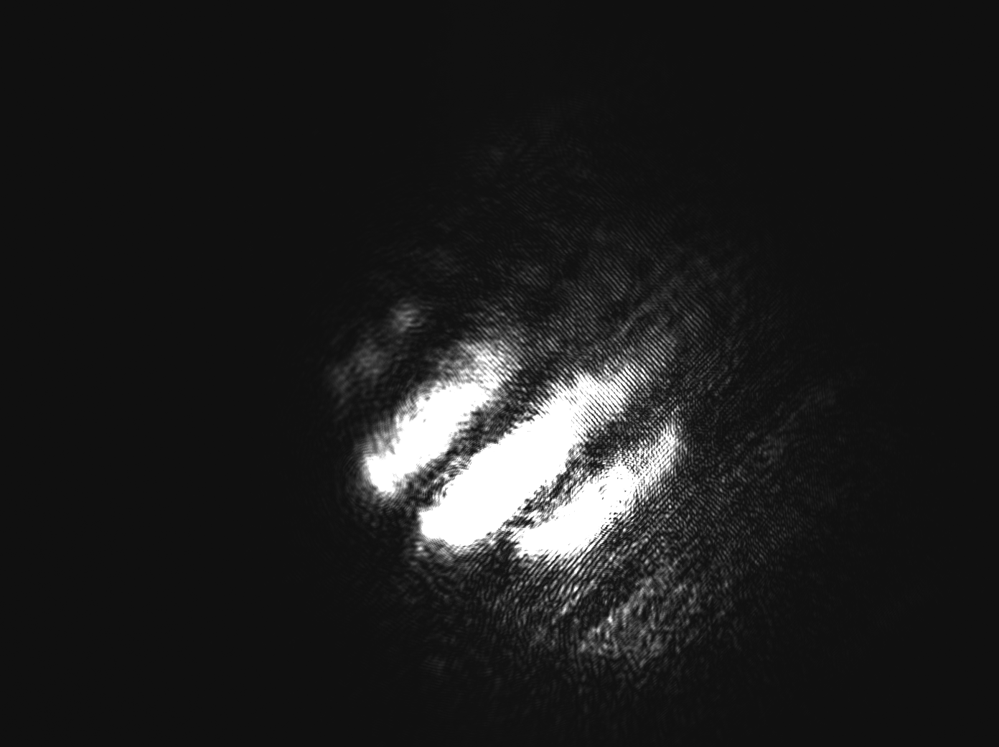

Aim
Generation of a vortex beam using a binary hologram.
Apparatus Required
The equipment and materials required for the experiment are:
- Laser
- Microscope objective
- Pinhole
- Iris diaphragm
- Mirrors
- Beam-splitter
- Lenses
- Printed holograms
- Camera
Theory
By using the principle of computer-generated holography, a user-defined wavefront of a vortex beam can be generated. The complex amplitude of the beam is mathematically represented as:
A(x, y) = ei(φ(x, y) - τ(x, y))
Here, φ(x, y) represents the desired phase function and τ(x, y) represents a linear tilt function. The tilt function, τ(x, y) = f0x + f0y, represents the amount of deflection of the desired beam with respect to the undiffracted zero-order beam. The algorithm defining the transmittance function, gt(x, y), of the binary hologram to generate the object beam is given as:
gt(x, y) = { 1 if cos[φ(x, y) + τ(x, y)] ≥ 0, 0 if cos[φ(x, y) + τ(x, y)] < 0 }
The complex amplitude profile just after the hologram plane is in fact given by the transmittance function gt(x, y). The light diffracted by the hologram, when focused by a lens, results in the formation of diffraction spots corresponding to various diffraction orders.
Experimental Setup
Beam Expansion & Collimation: The laser beam is first expanded using a microscope objective and collimated by lens L1.
Beam Splitting & Diffraction: A beam splitter (BS) and mirrors direct the beam onto the printed hologram (grating pattern). The hologram diffracts the beam into multiple orders.
Isolation of Diffraction Orders: An iris diaphragm (ID) isolates the +1 order, filtering out unwanted diffraction orders. The isolated +1 order is focused onto a digital camera (CCD).
Interference Recording: The reflected beam from mirror M1 is blocked initially. Later, the 0th order (undiffracted beam) is combined with the +1 order to create an interferogram. This records the interference pattern between a plane wavefront and a user-defined wavefront.

Figure 1: Experimental Setup
Observation
|  |  |
| Figure 2: Vortex Beam | Figure 3: Interference Pattern |
|---|
Results
Generated a vortex beam using a binary hologram and observed the vortex beam and the interference pattern between both the plane wavefront and vortex wavefront.